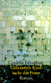

Kurzbeschreibung "Natürlich hatte das Mädchen schon immer gewußt, daß etwas mit ihr nicht stimmte ..." Sie war nicht nur nichtehelich geboren - sie war auch eine "Dreivierteljüdin". Um sie vor den Rassengesetzen der Nazis zu schützen, unternimmt ihre Mutter, die Schriftstellerin Elisabeth Langgässer, den verzweifelten Versuch, eine Adoption zu arrangieren. Fast ist die vierzehnjährige Cordelia gerettet, da erpreßt die Gestapo sie unter Androhung eines Hochverratsprozesses gegen ihre Mutter zu einer folgenschweren Unterschrift. Der Weg durch die Hölle führt von Berlin nach Auschwitz und vor die Augen des berüchtigten Dr. Mengele ...